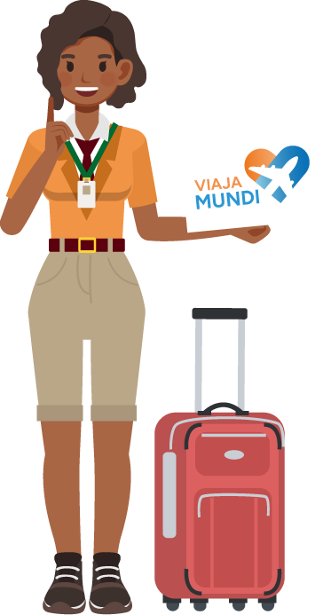
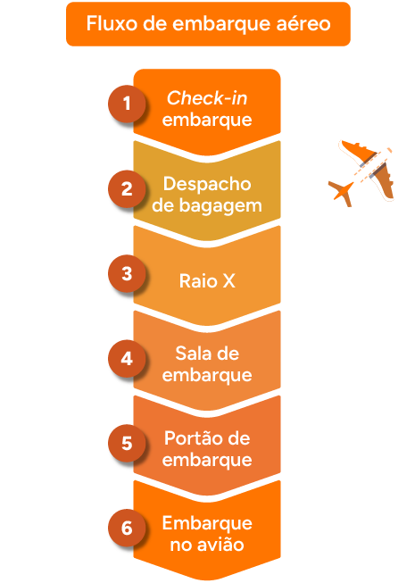

Transporte aéreo: check-in de embarque, acompanhamento e desembarque
Introdução
Os procedimentos técnicos de embarque e desembarque em terminais aéreos começam em sua preparação para a viagem e encerram no destino final. Você, futuro técnico em guia de turismo, será um profissional-chave para os turistas durante esse processo que, muitas vezes, é a porta de entrada para a realização de sonhos dos seus passageiros.
O transporte aéreo é um dos modais mais utilizados ao redor do mundo, sendo bastante representativo no turismo receptivo brasileiro e com potencial de crescimento no turismo doméstico. Neste cenário, para garantir uma experiência segura e eficiente para os passageiros, o guia de turismo precisa dominar as etapas do processo de viagem aérea, desde o check-in até o desembarque.
Este material abordará os procedimentos e cuidados necessários em cada uma dessas fases, com o objetivo de preparar você para auxiliar os turistas de forma profissional. Você compreenderá as particularidades do procedimento de embarque com atenção especial à documentação exigida e ao fluxo de atendimento até chegar à aeronave. No desembarque, os combinados com o grupo e cuidados com a bagagem são essenciais para orientá-los. Ao final deste conteúdo, você estará apto a conduzir seus passageiros em todas as etapas da viagem aérea, contribuindo para uma experiência tranquila e apoiando seu grupo em situações adversas que poderão surgir.
Preparação para viagem aérea
A organização e o conhecimento técnico do guia de turismo neste momento inicial serão essenciais para o bom andamento da viagem. Primeiramente, o seu trabalho envolverá o alinhamento com a agência de viagens referente às informações do roteiro que você executará. Procure esclarecer todas as suas dúvidas e detalhes sobre reservas, horários, documentação, além de revisar todo material de trabalho necessário para o planejamento das atividades.
Organize os seus pertences deixando o material que utilizará nos procedimentos de embarque em sua bagagem de mão. Não esqueça de verificar os itens permitidos para esse tipo de bagagem.
Vale destacar que existem documentos e equipamentos que serão úteis neste primeiro contato com os passageiros. Confira alguns:
Clique ou toque para visualizar o conteúdo.
É a pasta com a documentação para viagem aérea e demais fases do roteiro (e-tickets, plano de voo, lista de passageiros, roteiro detalhado, contato dos fornecedores).
Referem-se a crachá do guia, prancheta, caneta, placa da agência, uniforme ou roupa discreta e mochila com os demais materiais de trabalho (água, itens de higiene pessoal, power bank, uma muda de roupas extra em caso de extravio da bagagem do guia).
Referem-se a crachá do guia, prancheta, caneta, placa da agência, uniforme ou roupa discreta e mochila com os demais materiais de trabalho (água, itens de higiene pessoal, power bank, uma muda de roupas extra em caso de extravio da bagagem do guia).
É a pasta com a documentação para viagem aérea e demais fases do roteiro (e-tickets, plano de voo, lista de passageiros, roteiro detalhado, contato dos fornecedores).
Outro aspecto importante é saber antecipadamente o que o aeroporto oferece em termos de infraestrutura e quais autoridades podem ser encontradas no local.
Clique ou toque sobre a tela para assistir ao vídeo.
Chegue antes do horário combinado com seus passageiros para fazer este reconhecimento, assim, você se prepara para orientar o seu grupo, que poderá precisar desses serviços com agilidade e presteza. Em geral, a infraestrutura de aeroportos é composta de:
- Balcões de check-in das companhias aéreas
- Salas de embarque e desembarque
- Setor de raio X de pessoas e bagagens de mão
- Estabelecimentos de alimentação e lojas diversas
- Toaletes
- Serviços das companhias aéreas (acompanhamento de idosos, assistência a pessoas com deficiência ou a crianças desacompanhadas)
- Agência Nacional da Aviação Civil (ANAC): autoridade responsável por solucionar problemas no perímetro aeroportuário
- Agência Nacional da Vigilância Sanitária (Anvisa): responsável pela proteção da saúde da população, por meio do controle de produtos e serviços de origem animal e vegetal, prevenção e controle de doenças e questões relacionadas a vacinas
- Juizado especial e de menores: responsável por garantir a proteção dos direitos da criança e de todos os passageiros em situações de viagem
- Polícia Federal, imigração e alfândega (apenas em aeroportos internacionais)

Verifique também os documentos válidos para embarque dos passageiros. É indicado sempre consultar no portal da ANAC a documentação atualizada para viagem aérea. É responsabilidade do guia de turismo certificar-se de que todos os passageiros portem documentos para fins de comprovação de identidade em viagens, inclusive os acompanhantes, especialmente os menores de idade. Observe em sua lista de passageiros se há menores no grupo e já sinalize isso em seu controle, pois exigirá uma atenção especial na documentação necessária.
Confira a seguir quais documentos são aceitos de acordo com a ANAC (Brasil, [s. d.]) em viagem nacional (voos domésticos):
Clique ou toque para visualizar o conteúdo.
Agora que você já tem conhecimento dos seus preparativos para o trabalho e reconhece os documentos exigidos para o embarque, chegou o momento de receber seus passageiros.
Check-in para embarque
O check-in para o embarque aéreo envolve o processo de identificação do passageiro e despacho de bagagem, raio x das pessoas e bagagens de mão, além do fluxo de embarque. Devido aos procedimentos técnicos em terminais aéreos, o profissional deverá chegar com a antecedência ao local indicado para embarque, e, caso o voo já esteja disponível, faça o seu próprio check-in. Assim, você já despacha sua bagagem, emite seu cartão de embarque e fica disponível para focar em suas responsabilidades com a chegada do grupo.
Verifique com a companhia aérea se é possível realizar o check-in dos seus passageiros no mesmo balcão. Dependendo da companhia aérea, é possível fazer essa flexibilização, que trará mais exclusividade e segurança para acompanhar o check-in dos seus passageiros.
Segundo a recomendação da ANAC, os passageiros devem chegar com 2 horas de antecedência para embarques nacionais, lembrando que o guia de turismo deve estar no local antes desse horário.
Aguarde seus passageiros conforme local previamente combinado e com boa visibilidade para que possam localizar você. Esteja com seu material de trabalho e sua lista de passageiros para fazer a conferência da documentação necessária para o embarque. À medida que os turistas chegam, já faça o primeiro contato dando boas-vindas, apresentando-se cordialmente em nome da agência e solicitando o documento de identificação para validação. Não deixe esse processo para depois, mesmo que tenha bastante tempo disponível até o embarque. Eventualmente, em caso de divergências na documentação apresentada ou qualquer adversidade que precise gerir, ainda haverá tempo hábil para tomar providências.
No exemplo a seguir, você pode ver o guia de turismo aguardando o grupo para embarque em local visível, portando seu crachá de identificação, vestindo roupas discretas e segurando uma placa da agência para auxiliar o grupo na sua identificação.
Mas o que o guia de turismo deve fazer no momento da recepção do grupo no aeroporto?
Agora que o grupo já o localizou e você já fez o primeiro contato identificando seus passageiros, oriente esse grupo dos procedimentos de check-in e das regras de bagagem. Traga as informações sobre a infraestrutura do aeroporto, o voo e os horários.
Os passageiros devem ter em mãos seu documento de identificação e bagagem para fazer check-in. Lembre-se de que esse fluxo pode acontecer de algumas formas:
- Check-in individual em qualquer um dos balcões da companhia aérea
- Check-in on-line antecipado pelo aplicativo da companhia aérea
- Check-in individual em balcão exclusivo previamente combinado com a companhia, no qual você consegue acompanhar cada um dos seus passageiros
- Check-in individual nos totens de autoatendimento da companhia aérea (neste caso, você fica à disposição caso alguém precise de ajuda para realizar este processo)
Fonte: Falando de Viagem (2018)
- Check-in em grupo quando a reserva tem um único “localizador”. Isso é mais comum para grandes grupos. O guia de turismo pode realizar o processo de check-in e emissão dos cartões de embarque. Nesse caso, a atenção deve ser redobrada, pois o guia fica responsável por recolher os documentos de todos os passageiros e, com o bilhete aéreo (ou e-tickets), faz a emissão dos cartões de embarque junto à companhia para distribuir posteriormente para cada integrante do seu grupo. No caso de passageiros que tenham bagagem para despachar, eles podem entrar na fila exclusiva para esta finalidade.
As regras de bagagens costumam ser similares entre as companhias aéreas, com orientações específicas para bagagem de mão e bagagem despachada. É recomendado que o guia de turismo verifique antecipadamente com a empresa aérea contratada esses detalhes, pois sempre surgem dúvidas dos passageiros. Geralmente, as diretrizes para voo nacional estão em conformidade com a ANAC. Observe:
Clique ou toque para visualizar o conteúdo.
Independentemente da forma de check-in, é essencial que você esteja de prontidão para apoiar seus passageiros e esclarecer dúvidas que surjam. Após todos terem efetuado o seu check-in e encaminhado suas bagagens, reúna seu grupo para leitura dos cartões de embarque e conferência das informações, orientando-o sobre os próximos passos.
Confira a seguir um exemplo do cartão de embarque (que pode ser digital ou impresso), documento que dará acesso à sala de embarque e à aeronave, juntamente com o documento de identificação do passageiro. Mostre seu cartão de embarque e explique cada item de forma clara e objetiva.
Fonte: adaptado de GOL Linhas Aéreas (s. d.)
Após ler o cartão de embarque, se ainda houver tempo livre, reforce o horário combinado para ingresso na sala de embarque de acordo com o tempo especificado no cartão e libere seu grupo para ficar à vontade nas dependências do aeroporto, fazer compras, alimentar-se, ir ao toalete etc. Antes de liberá-los, mostre onde fica a sala de embarque.
Aproximando o horário para ingressar na sala de embarque, direcione-se para o local e aguarde todos os seus passageiros. O guia de turismo deve ser o último a entrar na sala de embarque, mas sem ultrapassar o limite de tempo combinado com todos.
Para acessar a sala de embarque em voo nacional, todos deverão passar pelos agentes de segurança que fazem o controle do raio X. Esse sistema facilita a inspeção de todos os conteúdos que não foram despachados (bagagens de mão, itens pessoais) e também das pessoas, garantindo a segurança dos passageiros. Caso haja algum objeto suspeito, pode ocorrer uma revisão manual da bagagem por um agente do aeroporto, o que é um procedimento padrão. Vale reforçar com os passageiros neste momento os itens que precisarão ser retirados para inspeção: notebooks, acessórios (colares, pulseiras, relógios), qualquer enfeite metálico etc. Essa orientação ajuda a agilizar o processo visto que o passageiro pode se organizar para o momento.
Fonte: Silva (2020)
Agora que todos passaram pelo setor de raio x, você já estará com seu grupo na sala de embarque. Observe onde fica o portão de embarque do seu voo e recomende aos seus passageiros que aguardem próximos ao local. Lembre a todos que o número do portão pode mudar; fique de olho nos monitores do aeroporto e atento aos avisos sonoros sobre eventuais mudanças de portão e horário do voo.
Mas o que fazer se ocorrer a mudança no portão de embarque?
O guia de turismo deve manter seu grupo informado, então reforce com ele esta alteração pelos canais de contato que foram estabelecidos. Geralmente, é possível fazer grupo de transmissão por aplicativos de mensagens para passar atualizações de forma mais rápida. Ainda, aguarde no local combinado inicialmente com o grupo para direcionar algum passageiro que não tenha percebido esta alteração, mas nunca passe do limite previsto pela companhia aérea para acessar o portão de embarque.
Quando estiverem todos reunidos na fila para o embarque, lembre-os de devem estar com seu documento de identificação pessoal e o cartão de embarque em mãos para acessar a aeronave. Seja o último a embarcar para que possa auxiliar seus passageiros, essa é a etapa final dos seus procedimentos para o embarque.
Se você chegou até aqui, é porque já passou pelas seguintes etapas:
Fluxo de embarque aéreo
1 – Check-in embarque
2 – Despacho de bagagem
3 – Raio X
4 – Sala de embarque
5 – Portão de embarque
6 – Embarque no avião
Acompanhamento
Durante a viagem aérea, o guia de turismo deve se submeter às regras aeroportuárias e apenas dar atenção especial a algum passageiro que estiver se sentindo mal ou precisar de ajuda (idosos, pessoas com crianças, gestantes, pessoas com deficiência, pessoas com medo de avião etc.), mas sem interferir no trabalho da tripulação. Em caso de grupos muito grandes, é possível verificar com o chefe de cabine se você pode utilizar o sistema de som da aeronave para falar com seu grupo. Carolla (2023, p. 357) menciona o seguinte:
Fale ao sistema de som com boas-vindas e uma introdução da viagem (em trajetos de ida) ou com encerramento e agradecimentos finais (em viagens de retorno). Em ambos os casos, é pertinente incluir instruções sobre o desembarque e as atividades posteriores, sobre a retirada das bagagens ou a respeito do transfer para o meio de hospedagem.
É importante observar se o voo é direto ou tem conexões, a fim de orientar o grupo sobre as próximas etapas e a retirada de bagagens.
Você sabe a diferença entre conexão e escala? Aprenda mais a seguir.
Clique ou toque para visualizar o conteúdo.
É aquele que vai direto ao destino, sem paradas.
Na conexão, é necessário que o passageiro troque de aeronave em algum aeroporto entre a origem e o destino. O guia deve manter-se atento ao grupo e auxiliá-lo no direcionamento à sala de espera correta. Em geral, o passageiro não precisa retirar a bagagem na escala, mas é preciso sempre confirmar com a companhia aérea as regras específicas do voo.
Na escala, o passageiro não troca de aeronave, mas existe uma parada em algum aeroporto entre a cidade de origem e a cidade de destino. Os seus passageiros apenas permanecem no avião enquanto aguardam o embarque/desembarque de outros passageiros e/ou abastecimento da aeronave.
É aquele que vai direto ao destino, sem paradas.
Na conexão, é necessário que o passageiro troque de aeronave em algum aeroporto entre a origem e o destino. O guia deve manter-se atento ao grupo e auxiliá-lo no direcionamento à sala de espera correta. Em geral, o passageiro não precisa retirar a bagagem na escala, mas é preciso sempre confirmar com a companhia aérea as regras específicas do voo.
Na escala, o passageiro não troca de aeronave, mas existe uma parada em algum aeroporto entre a cidade de origem e a cidade de destino. Os seus passageiros apenas permanecem no avião enquanto aguardam o embarque/desembarque de outros passageiros e/ou abastecimento da aeronave.
Depois de orientar o grupo, o guia de turismo deve aproveitar o tempo de viagem para descansar e se organizar em suas atribuições durante o roteiro. Se possível, ao chegar no destino, seja um dos primeiros a sair para auxiliar o grupo e indicar o caminho para a sala de desembarque, na qual são retiradas as bagagens.
Confira a seguir mais detalhes sobre essa etapa e seus procedimentos.
Desembarque
Chegando ao destino, após desembarcarem, reúna seu grupo e sigam até o local onde será realizada a retirada dos pertences despachados, nas esteiras de bagagem. Enquanto aguarda todos identificarem suas bagagens, você, o guia nacional, pode entrar em contato com o guia de turismo regional, a agência receptiva ou o motorista que receberá o grupo no aeroporto local.
Confira se todos os passageiros retiraram suas bagagens e peça para os passageiros verificarem se há algum sinal de bagagem danificada ou mesmo ausência de alguma bagagem. É importante que qualquer problema identificado seja relatado à companhia aérea ainda na área de desembarque.
Você sabe o que fazer em caso de extravio de bagagem?
A mala é considerada extraviada quando a bagagem despachada pelo passageiro não é entregue ao passageiro no seu destino.
No caso de extravio de bagagem, o passageiro deve se dirigir ao guichê da companhia aérea para comunicar o ocorrido. Para formalizar a reclamação, o passageiro deve apresentar o comprovante do despacho de bagagem e preencher o Relatório de Irregularidade de Bagagem (RIB) para iniciar o processo de busca ou conserto da bagagem danificada. Uma cópia do relatório ficará com a companhia aérea e outra com o seu passageiro.
Veja um exemplo de RIB com as informações que são solicitadas. Alguns detalhes podem variar de acordo com a companhia aérea, mas, de maneira geral, constam estas informações:
Atenção: para imprimir o arquivo Relatório de Irregularidade de Bagagem - RIB, acesse a tela inicial do curso e clique no botão de impressão.
Clique ou toque no botão a seguir para fazer o download do arquivo.
BaixarSegundo a ANAC, a bagagem pode permanecer nas condições de extraviada por até sete dias em voos nacionais, e, caso a bagagem não seja encontrada, a empresa aérea deve indenizar o passageiro.
Após o guia se certificar de que todos estão com suas bagagens, acompanhe seu grupo até o local combinado no aeroporto para o embarque que levará às próximas etapas do roteiro. O grupo será recebido pelo serviço receptivo, seguindo os próximos procedimentos, como a realização de embarque dos passageiros e speech inicial.
Encerramento
Neste material foi apresentado o detalhamento da atuação do profissional guia de turismo em procedimentos aéreos, para que este seja um facilitador na viagem dos seus passageiros e um parceiro nas realizações de sonhos.
É fundamental que o guia de turismo compreenda e domine os procedimentos de embarque e desembarque, para que possa apoiar seu grupo em todas as situações. Entre os pontos principais abordados estão verificar se o passageiro está com a documentação adequada para o embarque, ser rigoroso os com horários, orientá-los sobre a infraestrutura e o serviço oferecidos no local e esclarecer as regras de bagagem e os cuidados no momento de retirá-la no desembarque.
Com organização e atenção a estes detalhes, o guia de turismo desempenha um papel central na fluidez de toda a experiência de viagem aérea. Atualize-se sobre as normas e os procedimentos das companhias aéreas, buscando sempre aprimorar seus conhecimentos para orientar seus passageiros.
Agora, você já está preparado para realizar os procedimentos técnicos em aeroportos. Bom trabalho!